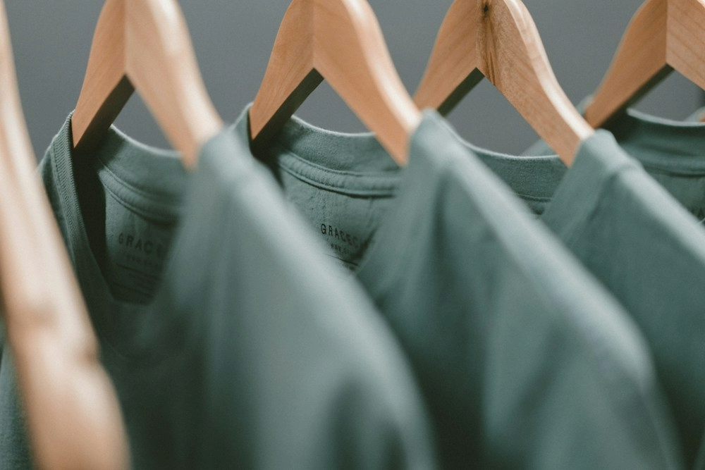

Zuhören
Wir sprechen über deine Wünsche, deinen Stil und deinen Alltag.
Wer wir sind
Eine gute Jeans ist mehr als ein Kleidungsstück. Sie soll passen, sich gut anfühlen und zu deinem Leben passen.


Unsere Haltung
Die Suche nach einer Jeans kann schwierig sein. Größen unterscheiden sich, Schnitte fallen unterschiedlich aus und Fotos zeigen nicht immer, wie sich ein Stoff anfühlt.
Darum setzen wir auf das persönliche Gespräch. Wir hören zu und helfen dir dabei, unterschiedliche Modelle zu vergleichen.
Als lokales Fachgeschäft in Hamburg-Wandsbek möchten wir dir die Möglichkeit geben, Jeans direkt anzuprobieren und deine Fragen vor Ort zu klären.
Was uns wichtig ist
Wir sprechen über deine Wünsche, deinen Stil und deinen Alltag.
Du kannst verschiedene Größen und Passformen vergleichen.
Du bekommst Orientierung und entscheidest in deinem Tempo.